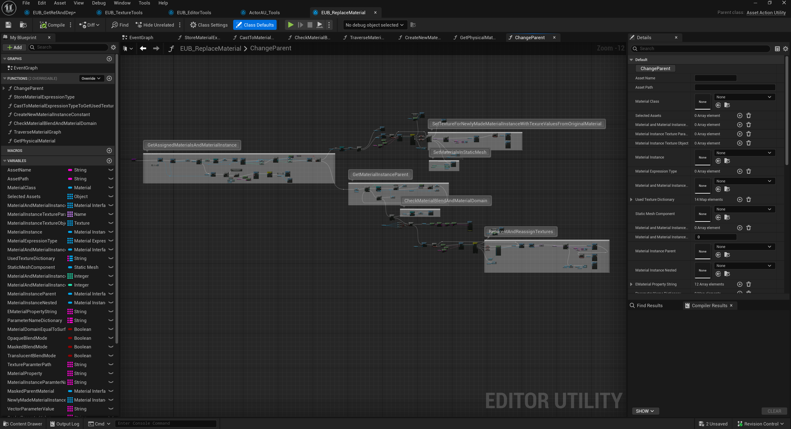
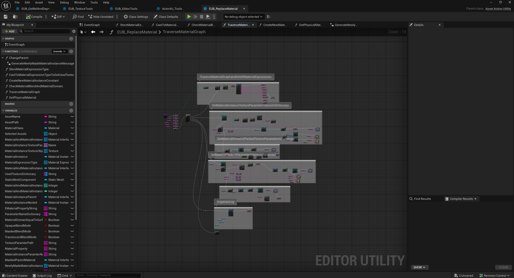
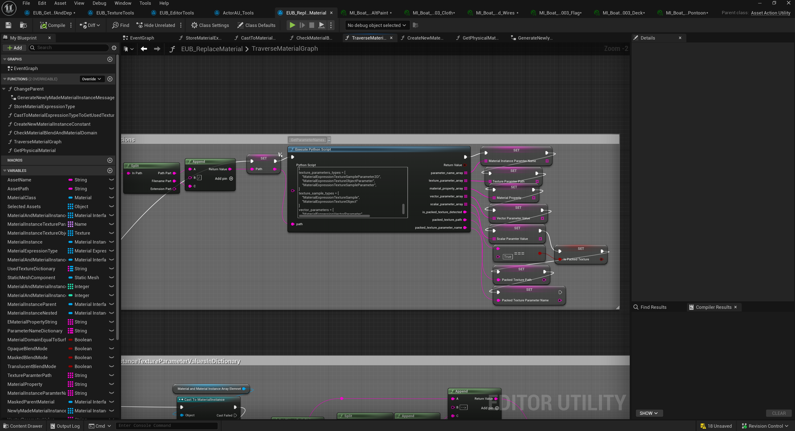

Summary
This case study demonstrates a tool for reparenting Unreal Engine materials. It appears focused on changing material parent relationships in a controlled way while preserving useful parameters and reducing manual material graph maintenance.
Case study 02 / Editor tooling
A scripted Unreal editor pipeline for optimizing an eight-year repository by parsing material graphs, mapping texture samples to material properties, packing ORM/MRA textures, and reparenting materials or instances to standardized master materials.



This case study demonstrates a tool for reparenting Unreal Engine materials. It appears focused on changing material parent relationships in a controlled way while preserving useful parameters and reducing manual material graph maintenance.
I am going to explain an approach to solve multiple problems and a mission which seems impossible to the eyes of many ->
We have a +8 years unreal engine repo, we want to optimize the assets in it and improve the performance
Unreal engine project overview:
So most of people wont touch this repo at all and thinks its impossible or too time consuming to optimize it, I like challenges ! so decided to find a solution to optimize the project in the shortest time possible with as much as automation we can get.
we need to be able to reparent materials automatically ! is it possible ? yes it should be, nothing is impossible ! can it be fully automatic ? no the process should be evaluated by a human and done in steps. (I have some ideas how to fully automate the process with some AI inference which i will explain in Possible improvements), more than 80% of the materials are simple PBR materials with couple of textures and no custom logic in between so we can aim for those and reparent those to our candidate master material if we know what TextureSample is for which MaterialProperty! right ?
To understand the idea lets break down material graph parts :
you cant connect two material expression to one material property ! so there are chains of material expression which at last will be connected to one of the material properties, in simple terms we can just reverse traverse the chain to get all of the material expressions connected to a material property and convert it to a usable description ( data ) like :
<MaterialProperty.MP_BASE_COLOR: 5>
-(MaterialExpressionLinearInterpolate)
-Input: A
-(MaterialExpressionMultiply)
-Input: A
-(MaterialExpressionVectorParameter) (Param)
-Input: B
-(MaterialExpressionLinearInterpolate)
-Input: A
-(MaterialExpressionTextureSampleParameter2D) (dash texture) (RGB)
-Input: UVs
-(MaterialExpressionMultiply)
-Input: A
-(MaterialExpressionTextureCoordinate)
-Input: B
-(MaterialExpressionScalarParameter) (scale dash)
-Input: Apply View MipBias As you can see you can parse the whole graph and gather some useful description which will be the ingredients for the logic we want to implement.
Based on the description we can just know what MaterialExpressionTextureSampleParameter2D is connected to what MaterialProperty ! I think you already can see the full puzzle !
Lets also break down the static mesh Assets too :
Summary of the solution: We need to create a Asset Action Utility that runs on static meshes -> Parse all of the material slots -> Get the material/MaterialInstance -> if material -> Create a new material instance from our candidate master material | if MaterialInstance -> get the parent material and Change the parent to our candidate master material -> Reverse Traverse parent material -> Find all the textures connected to Material properties -> Pack ORM/MRA Textures if not packed already -> map those texture assets to the MaterialInstance (from candidate master material) -> Done !
The tool works as a scripted action on static meshes and we were able to run the pipeline and curate more than 3k static mesh assets and reparented +47k materials/MaterialInstances in less than a month (3 people)